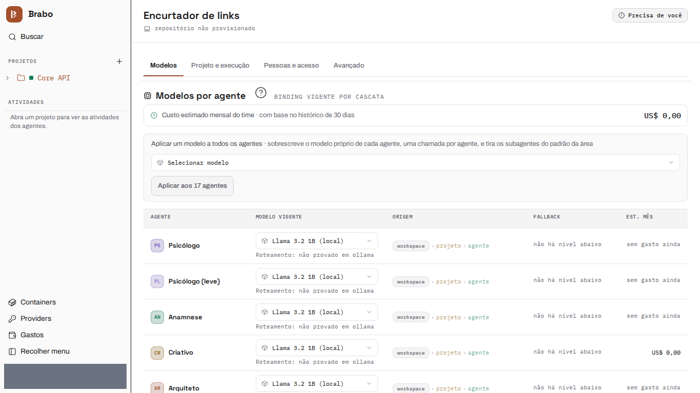
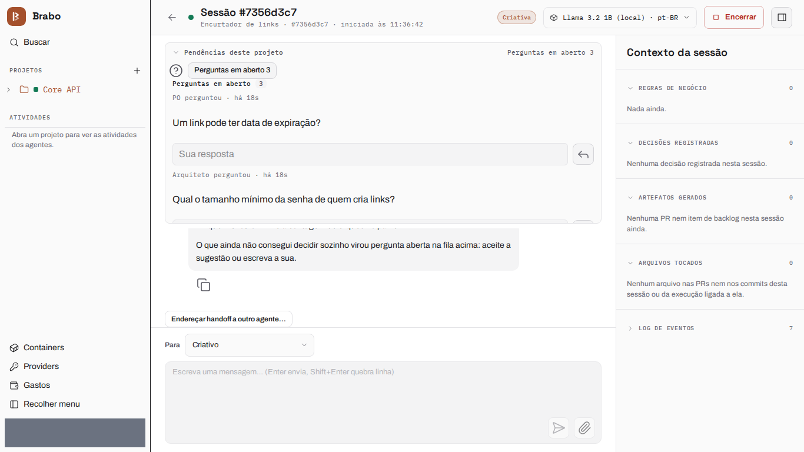
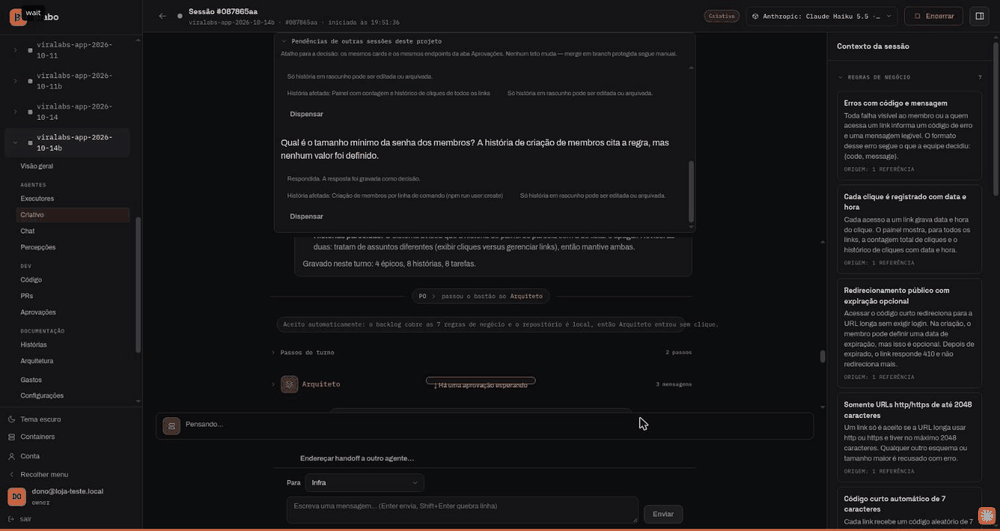
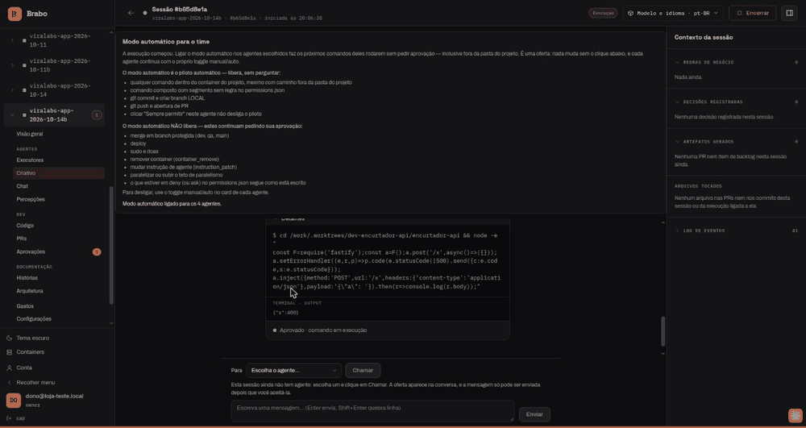
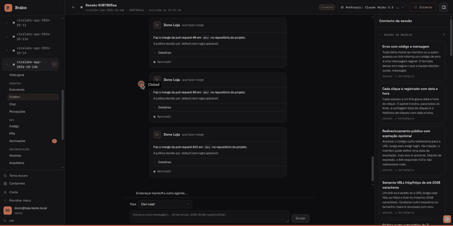

From zero to a deliverable
This page follows a project end to end, from an empty workspace to a running deliverable: a link shortener (Node 22 + SQLite), with the whole team on the same model. The screens in steps 1 to 3 are captures of the current interface, generated by brabo-qa on each version with the test data hidden.
Record from October 14, 2026: describes Brabo as it was on that date
The example run was recorded live, and these numbers are from it. The project, viralabs-app-2026-10-14b, ran on Claude Haiku 5.5 and cost US$ 1.07. From the idea to execution took 13 minutes, and to the last merge about 57 minutes of interaction. It produced 8 of 8 tasks, plus the ADR and the infrastructure pull request, and a deliverable whose suite passes 102/102 in a clean clone. The screens in steps 4 to 6 come from that recording, which predates the shadcn migration.
Everything through the Creative's chat
The whole run was driven from one place, the Creative's session chat: open questions, the architecture confirmation and every merge were decided there, without reloading the page or opening another tab.
The path, in six steps:
- Create the project and choose where the code lives.
- Give the team a model, in a single action.
- Describe the idea and answer the agents' open questions.
- Check the PO, the Architect and the ADR, and confirm the architecture.
- Approve the execution plan and turn on automatic mode.
- Merge every pull request that passes the gates, from the chat.
Each step below says what you do and what the agents hand back. The screens in steps 1 to 3 are from the current version; those in steps 4 to 6 are historical (see the box above).
1. Create the project
You create the project in the wizard and choose where the code lives. Here it is a mounted folder: the wizard suggests a path inside the installation's projects base, and the folder only needs to exist when the Infra brings the container up. Nothing is provisioned yet — the repository is born later, when the Architect is brought in.

2. Give the team a model
In Settings you apply one model to every agent in one action. This run applied Claude Haiku 5.5 to the whole team.

3. The idea, and the questions the agents ask back
You describe the product in the Creative's chat. In its first turn the Creative records 7 business rules and 1 decision, and turns what it could not decide on its own into open questions, each with a suggested answer and the rules it affects ("when a link is deleted, is its click history deleted too?"). The questions sit in the "Open questions" queue at the top of the chat: you accept the suggestion or type your own answer, and the answer is recorded as a decision. The closing line of the turn says what was written ("Recorded this turn: 7 business rules, 1 decision, 2 open questions"). When you are done, "I'm ready — the need is validated" hands the work to the PO.

4. PO, Architect and the ADR
The PO breaks the rules into a backlog — 4 epics, 8 stories and 8
tasks, in about a minute and a half — and asks back too when a rule is
missing a value ("what is the minimum password length?"). With every rule
covered by a story, the handoff to the Architect is accepted
automatically. The Architect proposes the ADR as a pull request
(arquiteto[bot], PR #1, "Single module with SQLite on a persistent volume")
and, once the architecture is defined, asks you to confirm it:
"Confirm architecture ready" is what brings the Infra in.
Record from October 14, 2026: describes Brabo as it was on that date
Screen from the Oct 14 recording, before the shadcn migration.

5. Infra, the plan and automatic mode
The Infra Lead brings the project's container up on its own and opens the
infrastructure pull request (infra[bot], PR #2). The Dev Lead reads the
backlog and the module map and proposes the execution plan; approving the
plan is what activates execution. The screen offers automatic mode for the
whole team in one click, saying what it does not release: merges into a
protected branch stay yours. From then on the dev agent works inside the
container (/work), and you can read each command it ran and its output in
the chat.
Record from October 14, 2026: describes Brabo as it was on that date
Screen from the Oct 14 recording, before the shadcn migration.

6. Merges from the chat
Each task runs in the dev agent (90 s on average from picking the task to the pull request, between 36 s and 144 s) and goes through the pipeline Dev → QA → SecOps → You. A pull request that passes the gates lands in the "PRs ready to merge" queue at the top of the Creative's chat: Merge proposes the merge and Approve, in the same block, confirms it. In this run the last seven pull requests (#4 to #10) were merged in about two minutes, with no page reload.
Record from October 14, 2026: describes Brabo as it was on that date
Screen from the Oct 14 recording, before the shadcn migration.

The deliverable
Record from October 14, 2026: describes Brabo as it was on that date
The run recorded on Oct 14 ended like this.
The dev branch of the project repository, cloned clean and run in
node:22 with npm test, passed 102/102 tests. docker compose up
brought the API up on port 8080, and every rule was checked over HTTP: a wrong
login and a request without a token get 401; an ftp URL or one longer than
2048 characters gets 400 INVALID_URL; the short code has 7 characters; the
public redirect is a 302 that records the click; an unknown code gets 404
LINK_NOT_FOUND and an expired link 410 LINK_EXPIRED without counting the
click; deleting a link returns 204 and removes its clicks; the panel shows the
count and the click history; npm run user:create refuses a password shorter
than 12 characters; and /docs serves the API reference. The CORS preflight
from 127.0.0.1:8080 and from localhost:8080 gets each its own
Access-Control-Allow-Origin, and a foreign origin gets none.
Next step
- Orchestrate a product across several repositories the path for splitting a product the way Brabo was split.